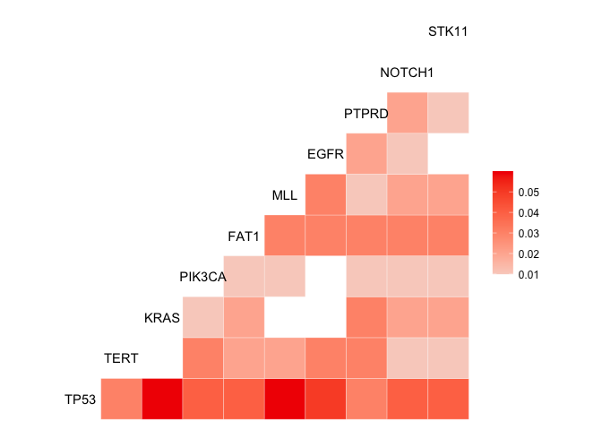

‼️ ⚠️ NOTE: This package is currently under active development with a new stable release expected April 2022. For code written before 2022-03-23, please use the previous stable version (v1.1.0)⚠️‼️
You can install the pre-2022-03-23 version with:
remotes::install_github('MSKCC-Epi-Bio/gnomeR@v1.1.0')Installation
You can install the development version of gnomeR from GitHub with:
# install.packages("devtools")
devtools::install_github("AxelitoMartin/gnomeR")Along with its companion package for cbioPortal data download:
devtools::install_github("karissawhiting/cbioportalr")Introduction
the gnomeR package provides a consistent framework for genetic data processing, visualization and analysis. This is primarily targeted to IMPACT datasets but can also be applied to any genomic data provided by CbioPortal.
-
Dowloading and gathering data from CbioPortal through an integrated API using simply the sample IDs of the samples of interests or the name of the study to retrieve all samples in that study. A separate package
cbioportalrwas developed independently. - Processing genomic data retrieved for mutations (MAF file), fusions (MAF file) and copy-number alterations (and when available segmentation files) into an analysis ready format.
- Visualization of the processed data provided through MAF file summaries, OncoPrints and heatmaps.
- Analyzing the processed data for association with binary, continuous and survival outcome. Including further visualization to improve understanding of the results.
Examples
Setting up the API
In order to download the data from CbioPortal, one must first require a token from the website CbioPortal wich will prompt a login page with your MSKCC credentials. Then navigate to “Web API” in the top bar menu, following this simply download a token and copy it after running the following command in R:
usethis::edit_r_environ()And pasting the token you were given in the .Renviron file that was created and saving after pasting your token.
CBIOPORTAL_TOKEN = 'YOUR_TOKEN'You can test your connection using:
cbioportalr::get_cbioportal_token()Retrieving data
Now that the Cbioportal API is set up in your environment, you must first specify the database of interest (IMPACT or TCGA are the two available options). Following this one can either specify the samples or study of interest:
library(gnomeR)
library(cbioportalr)
ids <- as.character(unique(mut$Tumor_Sample_Barcode)[1:100])
df <- get_genetics(sample_ids = ids,database = "msk_impact",
mutations = TRUE, fusions = TRUE, cna = TRUE)Processing the downloaded data
The binmat() function is the feature of the data processing of gnomeR. It takes genomic inputs from various sources of CbioPortal (mutation files, fusion files and copy number raw counts) to give out a clean binary matrix of n samples by all the events that were found in the files.
df.clean <- binmat(maf = df$mut, cna = df$cna)We further included example datasets from the raw dowloaded files on CbioPortal (mut, fusion, cna) which we will use for the following examples.
set.seed(123)
patients <- as.character(unique(mut$Tumor_Sample_Barcode))[sample(1:length(unique(mut$Tumor_Sample_Barcode)), 100, replace=FALSE)]
gen_dat <- binmat(patients = patients, maf = mut, fusion = fusion, cna = cna)
kable(gen_dat[1:10,1:10],row.names = TRUE)| TP53 | IGF1R | KEAP1 | KDM5C | KRAS | TERT | MAP2K1 | NCOR1 | DDR2 | FIP1L1 | |
|---|---|---|---|---|---|---|---|---|---|---|
| P-0010604-T01-IM5 | 1 | 0 | 0 | 0 | 0 | 0 | 0 | 0 | 0 | 0 |
| P-0002651-T01-IM3 | 1 | 0 | 0 | 0 | 0 | 0 | 0 | 0 | 0 | 0 |
| P-0000270-T01-IM3 | 1 | 0 | 0 | 0 | 0 | 0 | 0 | 0 | 0 | 0 |
| P-0002915-T01-IM3 | 0 | 0 | 0 | 0 | 0 | 0 | 0 | 0 | 0 | 0 |
| P-0011099-T01-IM5 | 0 | 0 | 0 | 0 | 0 | 0 | 0 | 0 | 0 | 0 |
| P-0000080-T01-IM3 | 1 | 0 | 0 | 0 | 0 | 0 | 0 | 0 | 0 | 0 |
| P-0001741-T01-IM3 | 1 | 0 | 1 | 0 | 1 | 0 | 0 | 0 | 0 | 0 |
| P-0003964-T01-IM3 | 0 | 0 | 1 | 0 | 1 | 0 | 0 | 0 | 0 | 0 |
| P-0003842-T01-IM5 | 0 | 0 | 0 | 0 | 0 | 0 | 0 | 0 | 0 | 0 |
| P-0002597-T02-IM5 | 0 | 0 | 0 | 0 | 0 | 0 | 0 | 0 | 0 | 0 |
Visualization
MAF
Before we move on to more complex visualizations, we integrate the maf_viz() function to give an overview of the distribution of the different mutations across the cohort of interest:

sum.plots$genecomut
OncoPrints
OncoPrints are a convenient way to display the overall genomic profiles of samples in the cohort of interest. This is best used for a subset of genes that are under consideration.
genes <- c("TP53","PIK3CA","KRAS","TERT","EGFR","FAT","ALK","CDKN2A","CDKN2B")
plot_oncoprint(gen_dat = gen_dat %>% select(starts_with(genes)))
FACETs
FACETs is an ASCN tool and open-source software with a broad application to whole genome, whole-exome, as well as targeted panel sequencing platforms. It is a fully integrated stand-alone pipeline that includes sequencing BAM file post-processing, joint segmentation of total- and allele-specific read counts, and integer copy number calls corrected for tumor purity, ploidy and clonal heterogeneity, with comprehensive output.
p.heat <- facets_heatmap(seg = seg, patients = patients, min_purity = 0)
p.heat$p
Analysis
In this section we will quickly overview the possible analysis in gnomeR.
Binary and continuous outcomes
The gen_summary() function let’s the user perform a large scale association between the genomic features present in the binmat() function output and an outcome of choice:
- binary (unpaired test using Fisher’s exact test and paired test using McNemmar’s exact test)
- continuous (using simple linear regression)
Survival analysis
Similarly we include simple tools to perform univariate Cox’s proportional regression adjusted for false discovery rate in the gen_uni_cox() function.
time <- rexp(length(patients))
status <- outcome
surv_dat <- as.data.frame(cbind(time,status))
out <- gen_uni_cox(X = gen_dat, surv_dat = surv_dat, surv_formula = Surv(time,status)~.,filter = 0.05)
kable(out$tab[1:10,],row.names = TRUE)| Feature | Coefficient | HR | Pvalue | FDR | MutationFrequency | |
|---|---|---|---|---|---|---|
| MLL | MLL | -1.48 | 0.23 | 0.0155 | 0.496 | 0.09 |
| STK11 | STK11 | -1.46 | 0.23 | 0.0519 | 0.831 | 0.07 |
| KEAP1 | KEAP1 | -1.02 | 0.36 | 0.1670 | 0.922 | 0.05 |
| NOTCH1 | NOTCH1 | 0.61 | 1.84 | 0.2070 | 0.922 | 0.08 |
| DOT1L | DOT1L | 0.66 | 1.93 | 0.2110 | 0.922 | 0.05 |
| TSC1 | TSC1 | 0.75 | 2.12 | 0.2130 | 0.922 | 0.05 |
| CDH1 | CDH1 | 0.60 | 1.83 | 0.2520 | 0.922 | 0.06 |
| EPHA5 | EPHA5 | -1.08 | 0.34 | 0.2870 | 0.922 | 0.05 |
| PIK3CA | PIK3CA | 0.41 | 1.51 | 0.2950 | 0.922 | 0.12 |
| PTPRD | PTPRD | 0.49 | 1.63 | 0.3570 | 0.922 | 0.08 |
out$KM[[1]]
Further analytical tools
The primary goal of gnomeR not being in depth analysis of genomic data but rather reliable, modulable and reproducible framework for processing various types of genomic data. For users interested in large scale genomic analytical methods we compiled various packages developed by Department of Epidemiology and Biostatistics, Memorial Sloan-Kettering Cancer Center under an umbrella R package, gnomeVerse.